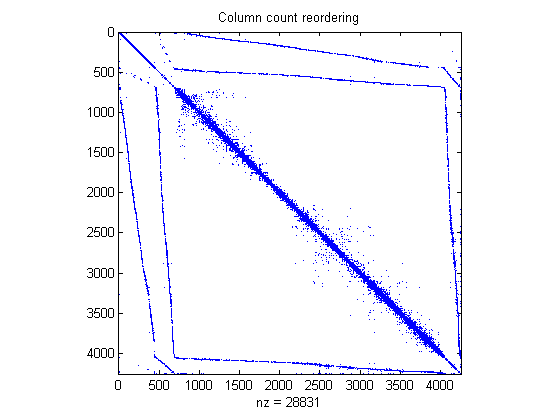

スパース行列のグラフィカルな表現
このデモは、2 つのトレーリング フラップを含む NASA の翼に対する有限要素メッシュを示します。
目次
データは、ファイル AIRFOIL.MAT に格納されています。4253 組のメッシュ点の (x,y) 座標が保存されています。メッシュ点間の結合を指定する 12,289 組のインデックス (i,j) を含む配列も保存されています。
load airfoil
有限要素メッシュ
まず初めに、範囲が [0,1] になるように 2^(-32) で x と y をスケーリングします。次に、スパース隣接行列を作成し、これを正定にします。
% Scaling x and y x = pow2(x,-32); y = pow2(y,-32); % Forming the sparse adjacency matrix and making it positive definite n = max(max(i),max(j)); A = sparse(i,j,-1,n,n); A = A + A'; d = abs(sum(A)) + 1; A = A + diag(sparse(d)); % Plotting the finite element mesh gplot(A,[x y])

スパース パターンの可視化
SPY は、スパース パターンを可視化するために使われます。SPY(A) は、行列 A の スパース パターンをプロットします。
spy(A)
title('The adjacency matrix.')

対称的な並べ替え - 逆 Cuthill-McKee
SYMRCM は、隣接行列の並べ替えに逆 Cuthill-McKee 手法を使用します。r = SYMRCM(A) は、A より対角に近い対角要素を持つ傾向がある A(r,r) となるような置換ベクトル r を返します。これは、"細長い" 問題から生じる行列の LU 分解、またはコレスキー分解に対して、良い前処理の並べ替えを行います。対称と非対称の A の両方に対して機能します。
r = symrcm(A);
spy(A(r,r))
title('Reverse Cuthill-McKee')

対称的な並べ替え - COLPERM
非ゼロ数の降順でないスパース行列 A の列を並べ替える置換ベクトルを返すために j = COLPERM(A) を使用します。これは、LU 分解の前処理の並べ替えとして有効です。lu(A(:,j)).
j = colperm(A);
spy(A(j,j))
title('Column count reordering')
 対称的な並べ替え - SYMAMD
SYMAMD は、対称な近似最小次数置換を与えます。対称の正定行列 A に対して、p = SYMAMD(S) は、S よりもスパースなコレスキー因子を持つ傾向のある S(p,p) となるような置換ベクトル p を返します。しばしば、SYMAMD は、対称不定行列に対しても、問題なく機能します。
m = symamd(A);
spy(A(m,m))
title('Approximate minimum degree')